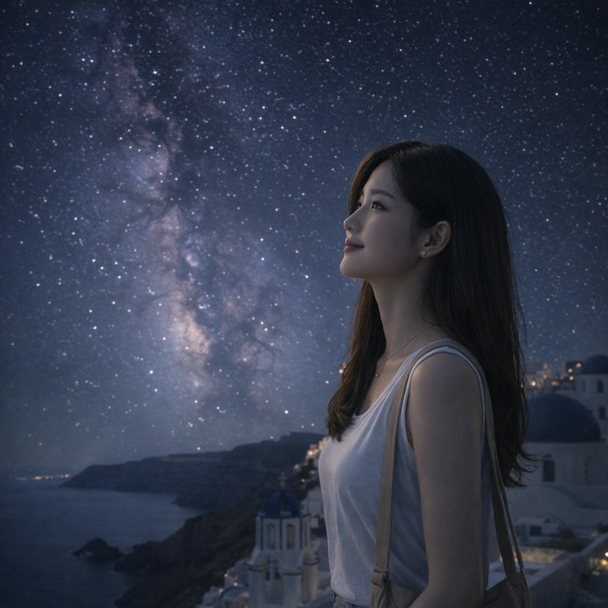

Under the Milky Way
Published:

Night settles on the island, and the sky unfolds like a map of quiet wonders. Dorami finds a ledge above the water and
lets her eyes trace the soft river of stars—no rush, no noise, just the hush of waves and the breath between constellations.
The Milky Way feels close enough to touch, and the world is simple again.
← Back to Dorami's Diary